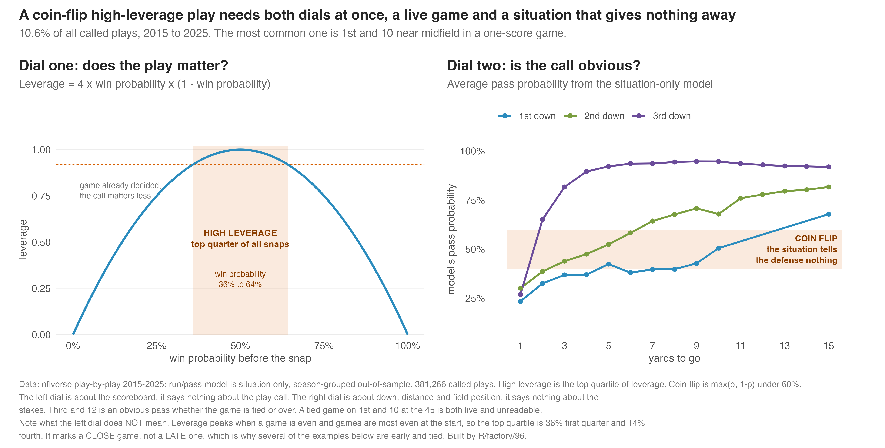
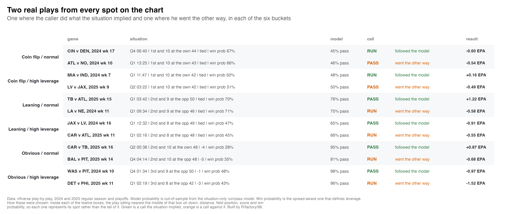
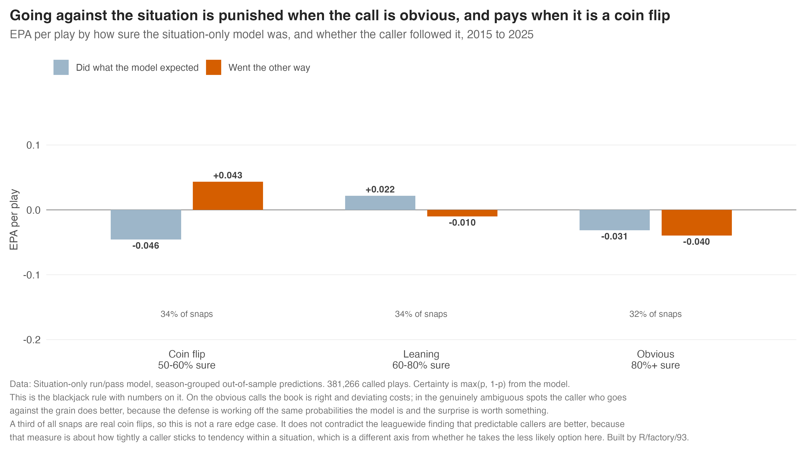
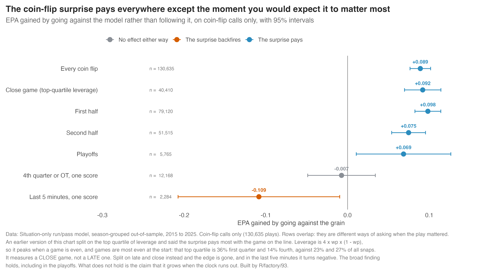
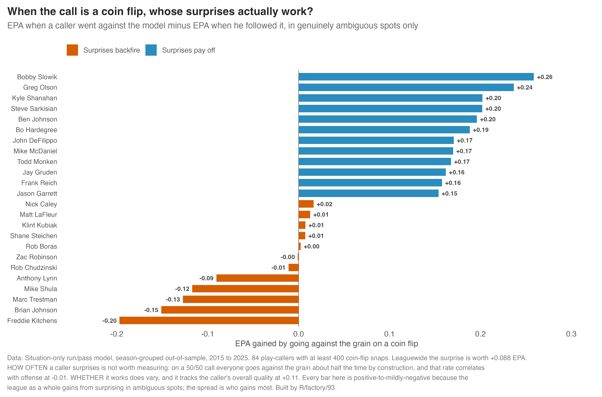
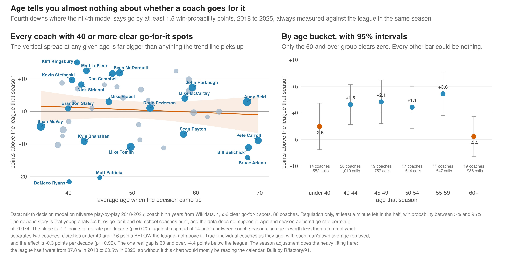
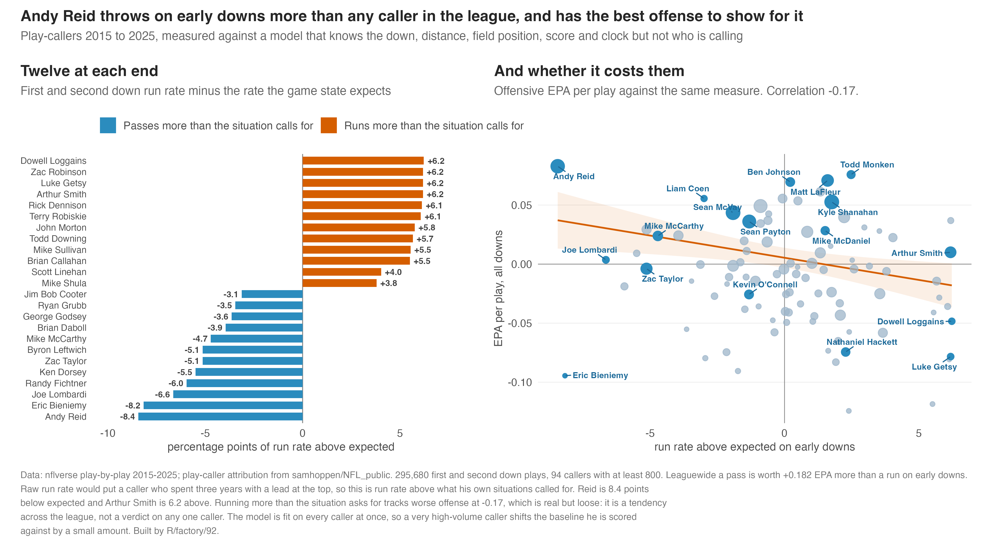
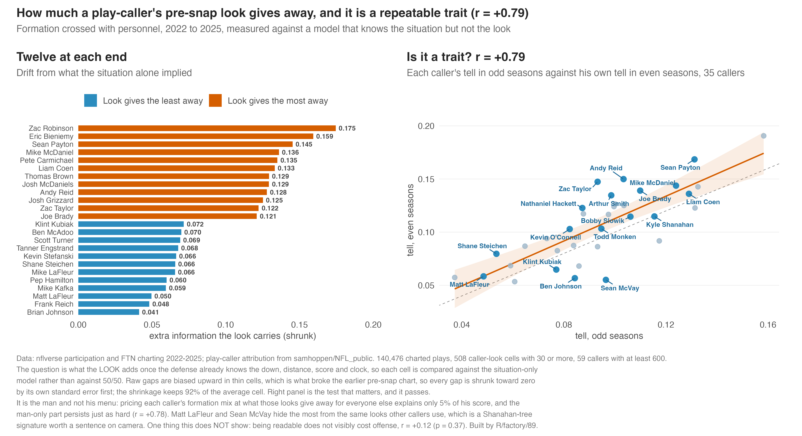

Script Outline
The script outline in order, with our best version of each thing underneath it. Orange boxes are where we do not have something solid yet.
Setup: Defense vs. Offense — McVay vs. MacDonald
McVay (offense)


MacDonald (defense)


Have coordinators decreased in age? How much? Offense? Defense?

The Seahawks defense struggled against the Rams, but their offense shredded them

Personnel
What 11 and 13 personnel are, and who uses them

What Sean McVay did
How does this do against lighter boxes?

Is play action more effective out of 13 personnel?

Run vs. Pass


What a coin-flip high-leverage play is
Two things have to be true at once. High leverage means the game is still live, with win probability between 36% and 64%. That is the top quarter of all snaps by how much a single play can swing the result. Coin flip means the situation gives the defense nothing, with the model landing between 50 and 60% on run or pass. It knows down, distance, field position, score and clock, and it does not know who is playing. The two together are 10.6% of all called plays, and the typical one is 1st and 10 near midfield in a one-score game.
One thing to say carefully on camera. High leverage here means a close game, not a late one. Leverage peaks when a game is even and games are most even at the start, so 36% of the high-leverage bucket is the first quarter and only 14% is the fourth. That is why several of the examples below are tied in the first quarter.


When is it worth being unpredictable?



4th Downs
How do coaches look here?
Every fourth-down chart on this page is credited to the head coach, not the play-caller. That is why Mike Macdonald appears on them even though he calls the defense. The head coach has the final say on whether to go, and it lands on him when it fails.

Old coaches against young coaches

Coaches will punt when they should go for it, but not the other way around


What the decisions cost


Running on early downs
Teams are still doing this too much

Which play-callers are best and worst at it?

Adaptability
First half vs second half adjustments

Adapting to the players you have
Kyle Shanahan and Ben Johnson


Disguise (offense and defense)
Same look, different play
This is the one that worked. For every caller and every look he uses (formation crossed with personnel), compare what he actually called against what the situation alone predicted. That isolates what the look gives away on top of the down, distance, score and clock the defense already knows. Every gap is shrunk by its own standard error first, which is the step the earlier pre-snap chart was missing.

Where the rest of this stands
Post-snap disguise still needs tracking data, which we cannot license past 2022. The older pre-snap tell chart below is superseded by the one above. Research ideas at the bottom for the group to pick from.

Research ideas to discuss
- Motion at the snap versus motion before it. FTN flags motion but not whether the man was still moving at the snap. Split those and the deception question gets sharper, because only one of them actually moves a defender late.
- Formation variety per caller. How many distinct formation and personnel combinations does a caller use, and does a wider menu buy anything? Entropy over the look distribution, same method as the predictability work.
- Same look, different play. Built, and it is now the chart at the top of this section.
- Late motion and defensive response. Participation data has the defensive personnel on the field. If the defense substitutes or changes shell after motion, that is deception working. Needs care but the fields exist.
- Cadence and hard counts. Pre-snap penalties drawn on the defense per snap is a crude but real proxy for a caller who manipulates cadence. Nobody publishes it as a coaching stat.
- Play-action after a run versus after a pass. Directly tests the sequencing claim below with the disguise framing: is the fake more convincing when the run game has been established that drive?
Sequencing
Play action: rate, and what the situation expected


Does running set up the play-action pass?


Still to do: a literature check on what is already published on sequencing, so we are not re-deriving something or contradicting a known result without knowing it. Worth asking Paganetti directly, since this is his area.
Play Action
Everything on play action in one place